１年間 ありがとうございました！
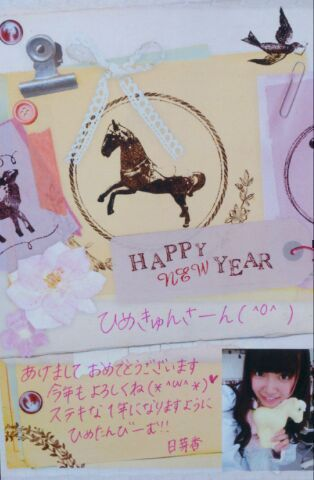
ひめたんからひめきゅんさんへ
年賀状書いたよ∩(＊^ω^＊)∩
ポストに出すのめんどくさいから
写めでごめんね♪♪
受け取ってくださーいなっ
＼ 忘れる前に個握の私服 ／
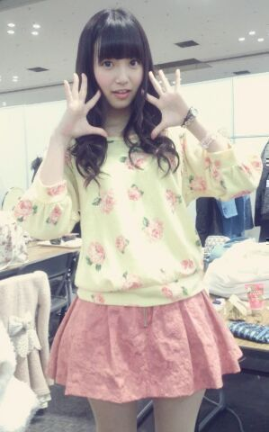
トップス...LIZ LISA
スカート...CECIL McBEE
メルヘンでしょー？
最近買った服じゃないんだけどね
このスカートとか結構すき(・∀・)
手に黒ゴムしてるとこあたり
女子力の欠如が浮き彫りになってますね
来年は気をつけます......
とゆーことで改めまして
１年間ありがとうございました！
今年はじめましてしたみなさんも
今年も引き続きお世話になりましたみなさんも
ひめきゅんさんとして
一緒にがんばってくださったおかげで
ステキないちねんになったと思います＊＊
携帯を置いて、パソコンのマウスを置いて
みなさんで拍手しましょう
お疲れさまでした！
みなさんが
ぱちぱちーってしてる姿を想像したら
かわいくてにやにやしそうになった( ´ ▽ ` )
してないよ？別にしてないけどね？
今年１年いろいろありましたけども
みなさんの思い出ベスト3はどれですか？
ひめたんはーそうだなー
7th選抜に選ばれたこと
乃木どこヒットソングメドレー
代々木ライブかな｀・ω・´
お箸の持ち方が直ったり
メイドさんの服が着れたり
前髪革命も起こったりしました
コウモリよ、やさしさとは
ユニット曲をいただけたことも嬉しかったな。
プライベートはいくちゃんとお泊りしたこと
学校のお友だちがサプライズ生誕祭してくれたこと
地元に帰ってこれたこと！
みなさんのも聞きたーい◎
乃木坂ちゃんとの思い出でも
プライベートでも何でも！教えてー？
とゆーことで
来年ももっともっとステキな
いちねんになりますようにっ
今年も１年ありがとうございました
来年もよろしくお願いします！
おねーさんたちCDTV出るってよー
みんなで応援しよ(＊´ω`＊)ノ
前回の記事たくさんコメント
本当にありがとうございました(´；；｀)
地元のお友だちと同じように
みなさんも待っててくれたんだなーって思うと
なんか、もう、みなさん(´；；｀)らぶ
広島レポかるーくするね♪
昨日は幼なじみとまったり話して
おうちの大掃除をお手伝い
夜からおばあちゃん家にお泊りにきてるよー
今日は課題をやりながらこたつでまったり
このあとみんなでおそば食べるのー
なんか町並みとかちょっとずつ変わってて
どっこを見ても感動してしまう
市電とか乗るとなんだかほっこりする。
みなさんも家族さんやお友だちと
会ったりするのかな。
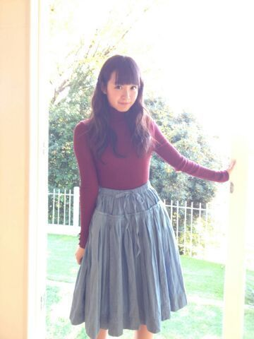
よいお年を！
(＊´・ω・＊)
土曜日は全握、日曜日は個握とゆーことで
今年最後の土日は
京都で過ごしました( ^O^ )☆
両日ともとっても寒かった中
来てくださったみなさんありがとうございました！
お留守番チームのみなさん レポしますっ
◎全国握手会
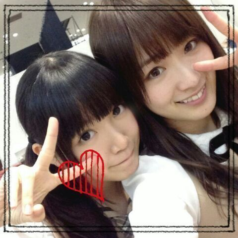
握手ペアはずーさん(高山一実ちゃん)
ずーさんファンのみなさん
仲良くしてくださってありがとうございました！
フレンドリーな方ばっかりで
平和でのんびりしたレーンでした♪♪
温厚で優しい方ばっかだったなー
ずーさんのポジピース精神を
あやかっていらっしゃるからなのかな(＊^ω^＊)
ずーさんの日記はもう見たよね？
ふたりでポジビームたる新技をしておるよー
ひめきゅんのみなさんありがとーう！
やっぱり京都会場ってなると
お久しぶりの方がたくさんいらっしゃって
会えて嬉しかったな＊
遠征してくれたみなさん
年末の忙しい中ありがとうね(´；；｀)
はじめましての方も
直接お話できてよかったです
これから仲良くしてねよろしくねーっ
ライブも楽しかった！
7th最後の全握とゆーことで
やさしさとは 披露する機会も
またしばらくなくなっちゃうのかな......
やさしさメンバーのみんなありがとう(´；；｀)
みんなと一緒にできて本当に嬉しかったよー
またユニット組んでいただけるように
ひめたんがんばるね！
◎個別握手会
２日連チャンの方はお疲れ様でした♪♪
５部参加ってことで
長いことお待たせしましたっ
遅い時間までありがとうね(´；；｀)
髪は久々に巻き下ろしでしたー
結構好評だったので１年の締めにと思って。
ナタリー・UTBスタイルです！
京都にはなかなか来るチャンスがないから
今日はたくさん挨拶できてよかったー
そうそう
東名阪(阪...大阪じゃないけどさっ)
の中じゃいちばん近いからかなー
広島から来たよとか
中国四国地方から来たよって方も
たくさんいらっしゃって
方言を久々に聞いた(´；；｀)
本当に嬉しかったなー
なんだか近いものを感じるのよね
こっち来てからあんま聞かないからさー
あっ関西弁も京都弁もすきよ///
昨日ごはん行ったら
従業員さんに「おいでやす 」って言われて
なんだからほっこりしちゃった＊＊
だから地方出身の方は
方言ばりばり出してこねーっ
そんなわけで
お姉さんチームはまだまだ
メディアのお仕事が残ってるので
全力で応援しつつ
私たち学生チームは今日で仕事納めでした！
ここで改めて
お仕事において
私たち乃木坂46に携わってくださったみなさん
１年間お世話になりました
まだまだ未熟な私たちですが
来年ももっともっとがんばります
よろしくお願いします( ^O^ )
ひめきゅんさん本当にありがとう！
年内会うのは今日が最後だったけど
ひめたんの日記は年末年始も
休まず全力で更新しますので遊びに来てねー
コメントするのに冬休みはいらないでしょ？んふ
ホテルは安定の
いくちゃん(生田絵梨花ちゃん)と相部屋でした
いつもホテルではおとなしいいくちゃんが
珍しくテンション上がっちゃったみたいで
ずーっと作詞して歌ってた。
そんないくちゃんだけども
夜遅くまでお勉強してたり
動画見ながらダンスの練習したりしていて
真面目だなーと改めて関心しました( ^O^ )
いくちゃん３日間ありがとう！
いつもいくちゃんと同じ部屋って
なんか気楽に休めるから好きだよー♪♪
あっそれから
まっちゅん(松村沙友理ちゃん)の日記
みなさんみましたー？
まっちゅんありがとーう∩( ^ω^ )∩
そうそう、２人って姉妹みたいーだとか
ひめたんとりんご姫でひめ姫レーンだねーとか
たくさん言っていただけて
びーむを受け入れてくださる率も
半端なくてとっても楽しかったのです！
まっちゅんすきすきーっ
ひめたんのブログの
コメント欄下２ケタに46を踏んだ方へ
手書きでコメ返するコーナー
＼ ひめたん46 ／
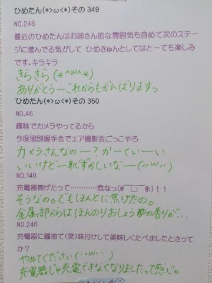
そんな私はなんと！
ついに！
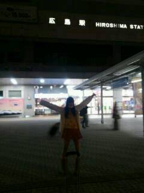
広島に帰りました＼( ^O^ )／
プライベートで帰ってきたのは
なんと２年ぶり！
選抜入るまでは帰らないーと言って
入ったら入ったでスケジュールがなかなかあわず
気づけば高２の冬......
それでも帰れてよかったーヽ(；▽；)ノ
今年は地元でゆっくり
羽を伸ばしつつ
課題を......やろうと思......
(＊´・ω・＊)
真夏さんらぶ！
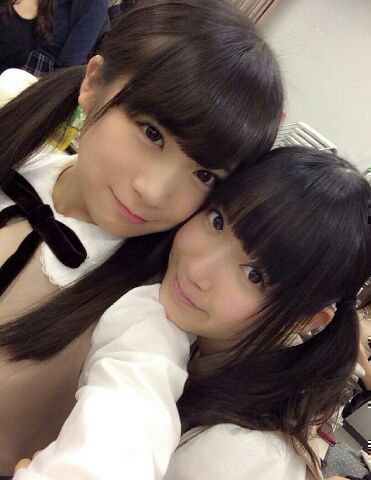
最近真夏(秋元真夏ちゃん)が異常にすき。
たんひめーって言って
ほっぺたぷにぷにしてくる真夏が
最近なんかすき。
あたし釣られてんのかな......悔しいな。
ずっきゅー｀・ω・´ーん
さて明日は全国握手会！
京都ですっ
行くよーってみなさんよろしくね☆
どうやら聞くところによると
幕張、名古屋の全国握手会
会場に入るまで寒かったらしいからねー
年末に風邪ひいたーとかなると
お正月楽しくないので
防寒対策よろしくお願いしますねほんとにね
握手のペアは
一億人の親戚ことカーキュリーこと
ずーさん(高山一実ちゃん)＊
ずーさんファンのみなさん
明日は仲良くしてくださったら嬉しいな
よろしくお願いします(＊^ω^＊)/
ひめきゅんさんもいつもありがとうねっ
明日は楽しくおしゃべりしましょーうね
ひめきゅんさん早く会いたいよーうぎうぎ
関西のみなさん おじゃまします！
遠征するみなさん どうかお気を付けて！
さてークリスマスは
乃木のの収録してきました！
文化放送をお聴きのみなさんは
新年一発目のオンエアです
ぜひ聴いてください☆
久々の乃木のの楽しかったー♪♪
終わってから
さゆ(井上小百合ちゃん)
万理華(伊藤万理華ちゃん)と
クリスマスしてきました！
さゆにゃんじゃなくて
さゆって呼ぶことにしてみたの＊＊
写めはふたりの日記に飛んでみてねー
にゃー楽しかったー
まったりお話しました(〃ω〃)
さゆはスケジュール帳を買ってたでしょ？
ひめたんはイヤホンを買いました！
あ、ほら、ちょっと前に話してた
ヘッドホンももちろん可愛がってるんだけどね
あれって持ち運ぶのがちょっと大変なのね
だから今は使い分けてるのー
移動中にまったりする時はイヤホン
おうちでまったりする時はヘッドホンかなー
オムライスんまんま
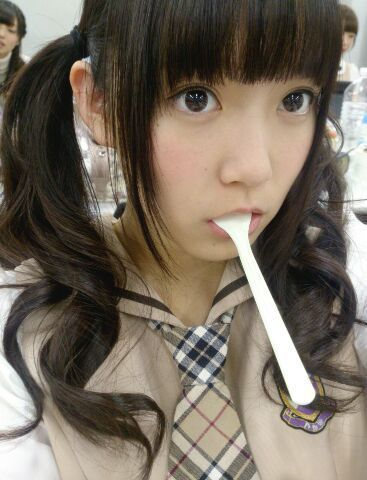
オムライスはおいしいです
みなさんオムライスは好きですかー？
オムライスの美味しいお店知ってたら教えてねー
ひめたんは鉄板中の鉄板ではありますが
ポムの樹が好きです。んまんま

 ひめたんが参加してなくてやってみたい
ひめたんが参加してなくてやってみたい
乃木坂の歌ってある？？「やさしさなら間に合ってる」
4thのカップリング曲なんですが
あの曲ほんとにだいすき！
でも、あのメンバー構成だからいいのかなー
次の春から一人暮らしになるのですが、
簡単に作れる料理ってありますか？なんでしょうねー
サラダ味のお菓子にお湯入れてかき混ぜたら
あっという間にポテトサラダの完成だよーとか
別に考えてないけどさ。
生駒ちゃんにカンチョーされたらどうするの？
やっぱ無視？お尻触ってきたりとかよくありますね
あわあわしちゃいます(((o(*゜▽゜*)o)))
ひめたんはカレーは甘口、中辛、辛口だったら
どの味が好きですか？辛口は厳しいかなー
甘口もしくは中辛までセーフかな
いや、中辛は辛さによりけりって感じですかねー
(ヤンマガ)デザートはメンバーで
おいしくいただきましたって感じですか？そーうですその通り！
スイーツだいすきメンバーだったので
撮影中も結構おいしくいただいておりました
あまりにカメラを意識しなさすぎて
「ほら！お仕事中！」って(´・ω・｀)
新幹線で隣に座ったいくちゃんに
ひめたんビームをすると、
いくちゃんは押し黙ってしまいますよね？残念ながらひめたんはいくちゃんと
どうやら正反対みたいで
ひめたんは移動中はおとなしく休みたい人です
びーむとかしないんだよねー
そして移動中のいくちゃんに
ひめたんびーむごときで太刀打ち出来るわけが
にゃんこ様がとりりーぬさんを
食べちゃわないか心配で寝れません。
二人はもちろん仲良しですよね？食べません！
おともだちだからとか以前に
猫さんは鳥さん食べてもうれしくないでしょ！
ブログのコメントは .全部見てるの ??よくこーゆー質問いただきます
みてますよーいつもありがとうね(＊^ω^＊)
日記を書く前に過去の記事のコメントを
読むようにしてます♪
だからちゃーんとチェックしてるよっ
ひめたん、女子みたいな男子は好きですか？中身がステキな人であれば
おとこのこ、おにゃのこ
どちらも好きです///
乃木坂ファミリーさんみんないい人(´；；｀)らぶ
ひめたんのブログの
コメント欄下２ケタに46を踏んだ方へ
手書きでコメ返するコーナー
＼ ひめたん46 ／
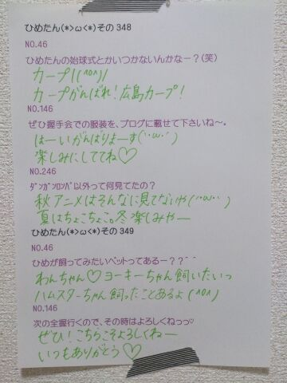
昨日は収録でした(＊^ω^＊)
１日休んだだけなのに
カラダって訛っちゃうもんみたいー
まったく恐ろしいもんですよー
あっ収録 楽しかったです♪♪
オムライス美味しかったっ
川後さんがひめたんの腕をホールドして
ひめたんの肩に頭を預けて寝息を立ててるよう
普段つんつんしてるおにゃのこが
ベタベタしてくれると
なんだかどきどきします。かわゆすうう
(＊´・ω・＊)
みなさんメリクリー∩( ^ω^ )∩
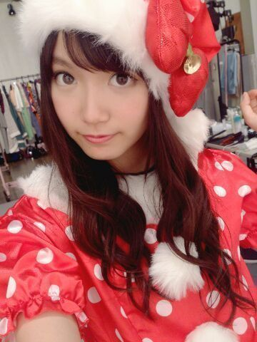
めりくり！
サンタさんじゃなくてひめたんが
プレゼントじゃなくて日記書きますよー
生写真 サンタ服ひめたんですこんばんは＊
みなさんクリスマスは
いかがお過ごしですかー？
昨日は１日オフだったのですが
年賀状書いて課題やったら終わってしまった......
いっいや！
カラダが休まってよかったんだよ！
別に あっけなかったなーとか思ってないし！
そんなわけでーここからは
みなさんにささやかな
クリスマスプレゼントってことで
良い子のおとこのこ宛に
妄想クリスマスのシナリオの一部←
良い子のおにゃーのこ宛に
ひめたんのお気に入りアイテム紹介
をしようと思いまーすっ
それぞれ興味がなかったら
スクロールしてぶっ飛ばしてくださーい(笑)
妄想クリスマス
大好きな(あなた)は
私よりちょっと年上で
お兄ちゃんみたいなひと
いつも私を子供扱いばかりしてくる
私にとってそれは
ちょっとばかりもどかしい...
今日はクリスマスデートの日
ふたりが付き合ってはじめてのクリスマスだ
こんな日こそ
楽しい時間はあっという間に終わってしまうもの。
ひめか
「今日は楽しかったーありがとうね☆」
あなた
「待って！はい、クリスマスプレゼント」
彼からのプレゼントは
かわいらしい くまのぬいぐるみだった
ひめか
「わーかわいい！ありがとう！」
あなた
「気に入った？やっぱりなー
ひめかはまだこどもだからこれで十分だよなー
じゃあ気をつけて帰るんだぞー」
ひめか
「いつもそうやってばかにするんだからー
だいじょうぶだよーじゃあね！」
私はひとりで家路に向かった。
(あなた)にとって私はやっぱり
妹みたいな、仲良しな後輩でしかないのかな
本当は恋人って思われてないのかな
私は本気で(あなた)のことが好きなのに...
家に帰ってから私は
ひとりでくまのぬいぐるみと戯れて遊んだ
ひめか
「ふんだ！どーせ私はこどもだもーん！」
ぽーんぽーんとぬいぐるみを
宙に向かって思いっきり投げていたその時......
(割愛・完)
ねえ！どーだった？
ひめたんとクリスマスデートできたでしょ？
あっちなみに
これは前回の乃木どこの企画で
ひめたんは披露しなかったけど脚本はしたのー！
え？短い？
ラストを割愛するなって？
ごめんねーでも
ダイジェスト盤って
こんなもんでしょ( ´ ▽ ` )笑
ほら、物語のクライマックスは
みなさんで好きにつくってみてよ！ね？
ちなみにひめたんが脚本した
妄想クリスマスの結末を知ってるのは
アンケートをちら見した若月とまいまいだけ。
ひめたんのお気に入りアイテム紹介
◎skin care
今はKIEHL'Sの美白ラインを使ってます♪
ニキビさんに悩んでた時は
プロアクティブも良かったよー
それから化粧水は
無印良品のオーガニックのやつもおすすめ
コットンパックたまにするよー
◎make
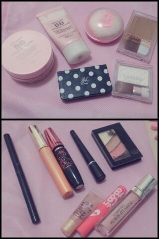
(上段)
・BBクリーム...ettusais
・パウダー...ettusais
・コンシーラー...24h Cosme
・チーク...ETUDE HOUSE
・シェーディング...CANMAKE
・ハイライト...CANMAKE
(下段)
・アイブロウ
・マスカラ(左)...dejavu
・マスカラ(右)...MAYBELLINE
・アイライン
・アイシャドウ...RIMMEL
・グロス(左)...MAJOLICA MAJORCA
・リップクリーム...MAYBELLINE
・グロス(右)...PUFFY LIP SERUM
アイブロウとアイラインは
表示が消えちゃってわかんないの(´・ω・｀)
ごめんねー
メイベリンのマスカラは
ボリュームを出したい時に足す！
グロスはマジョマジョがラメ入り
puffy lip serumはラメ無しなので
時と場合によって使い分けますっ
◎hair care
シャンプー、コンディショナーは
Je l'aimeのモイストリペア
KERASTASEのHUILE SUBLIMEっていう
洗い流さないトリートメントも
おすすめだよ( ^O^ )
◎Vita Coco
ココナッツウォーター
ムクミをすっきりしてくれる！
味が苦手な方が
いらっしゃるかもしれないです
◎BODY FANTASY Vanilla Fantasy
ボディスプレー
いろんな香りがあるよねー
バニラの香りがお気に入りです
◎THE BODY SHOP ストロベリーボディバター
マッサージする時は
このボディバターを使います
いろんな香りがあるけど
ひめたんはストロベリー派＊
あとはお馴染みひめたんりぼんを集めたり
最近はアロマ加湿器にハマったりして
おにゃーのこ満喫しておりますよ(´^ω^｀)
参考になったらうれしいな///
なんかおすすめのアイテムあったら教えてねー
情報共有しよーうっ
ひめたんのブログの
コメント欄下２ケタに46を踏んだ方へ
手書きでコメ返するコーナー
＼ ひめたん46 ／
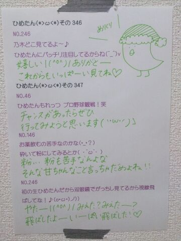
いつもコメントありがとーう( ^O^ )
今日はお仕事に行ってきます！
終わったらみんなで
クリスマスする予定ー♪♪
(＊´・ω・＊)
今日は名古屋全握でした！
来てくださったみなさん
ありがとうございました＊＊
気づけば４日連続で
ステージに立たせていただけていたなんて！
ライブ大好きなひめたんには
何よりのクリスマスプレゼントです♪♪
はっ今日クリスマスイブのイブか(｀・ω・´ノ)ノ
ライブのセットリストは
シングル６曲全部披露しました
いやーしかし7thも名曲揃いです。
握手会は
まっちゅん(松村沙友理ちゃん)と
同じレーンでした！
まっちゅんありがとーヾ(＠⌒ー⌒＠)ノ
まっちゅんファンのみなさん
ありがとうございましたヾ(＠⌒ー⌒＠)ノ
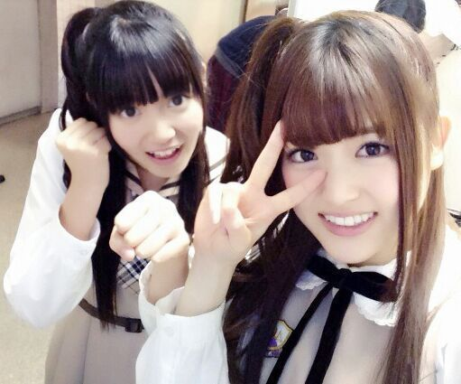
ひめたんごぱんち × さゆりんびーむ
なんとね、まっちゅんがね、
ひめたんとおそろっちのヘアしたいって
言ってくれたのね！
それでねツインじゃいつもと同じやってなって
サイドポニーはー？ってなったんだけど
今回はハーフアップくるくる
(通称 ひめたん結び)を
おそろっちさんにしましたヾ(＠⌒ー⌒＠)ノ
まっちゅんファンのみなさん
仲良くしてくださってありがとうございました！
とっても楽しかったです☆
アクティブでメルヘンなレーンでしたー
今日あっという間に終わりすぎたよー
昨日の乃木どこは
妄想クリスマスとゆーことで
私服！クリスマスに着たい私服だって！
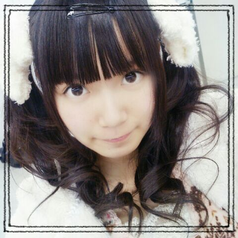
りぼーん∩( ^ω^ )∩
ひめたんりぼんが大好きでーと言いながら
いつもの制服にはアクセサリー付けらんないから
ステキな企画ですね！
ひめたんはお芝居しなかったけど
みーんなの妄想クリスマスみて
きゅんきゅんしましたー(〃ω〃)
みんなかわいかったよね！
あっ推し変はしちゃだめだぞー♪♪
クリスマスだからってそれは許されんぞー
あっそうそう
YOU PAPER 12月号
そろそろ届いていらっしゃるって
小耳にはさみまして。
たくさーんの質問に答えました！
読んだらひめたん博士になれると思う( ∀ )
ぜひチェックしてみてくださいっ

 (全握の)休憩って何してたの？
(全握の)休憩って何してたの？過ごし方はそれぞれだけど
水分とったり メイク直ししたりして
みんな休ませていただいております
いつも待っててくれてありがとーうね◎
ひめたんがゆるキャラっぽいってことで
ふなっしーみたいに語尾に
何か付けたらどうでしょう？そういえば
「ひめっしーだなっしー」って川後さんに言ったら
「は？調子乗んな？」と
たしなめられたことがあります(´；；｀)
誕生日には必ずする事ってある？乃木坂入ってからは
メンバーみんなで歌をうたって
ケーキのつつきあいをするのがお決まりかな☆
今度球技大会バスケ出ることになったよ！
何かコツとかあるかなえーっと、それはひめたんに聞いてるのかな
そうだなー技術的なことよりも
まずは思いっきり試合に参加したら
いいと思うよ( ^O^ )楽しもーう
お餅はなにをつけて食べるのが好き？？きなこ！きなこ！きなこ！
ひめたんはいつもどうやって起きてる？それがありがたいことに
ひめたんは朝スッキリぱっちり
起きられてしまう子なのです
そうだなーとりあえず気を張って寝るのだ！
制服じゃなくて曲の衣装では何が一番好き？13日の金曜日のワンピース！
あの衣装だいすきヾ(＊'ω'＊)ノ
かーいーもんねっ
ドジっ子って超モテるの知ってた？ひめたんはドジっ子とかじゃなーい！
たまたま辛子入りシュークリームが当たって
たまたま川に流されかけて
たまたまバスケゴールに激突した
それだけのこと(＊^^＊)そうたまたま！
ひめたん46
次回はやりますごめんなさいっ
いつもたくさんコメントありがとーう！
武道館の感想とか
UTBみてみるねーとか
タイムリーな声がいっぱい聞けて楽しい♪♪
普段の何気ない報告なんかも嬉しいよっ
これからも待ってるからねー
最近は乾燥がやばーよねー
喉やお肌にも多分よくないだろうから
加湿器かけてるんだけども
やっぱりつらいよー
みんながんばろー！乾燥なんかに負けないぞ！
(＊´・ω・＊)